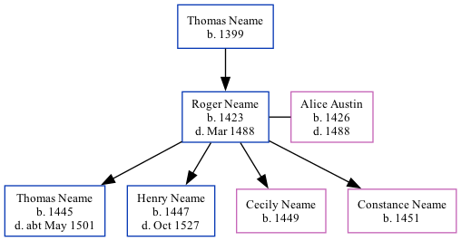

Roger Neame 1423 - 1488
[ Home ] | [ Calendar ] | [ Surnames Index ] | [ Family History ]The child of Thomas Neame, Roger Neame, the 15 times great-grandfather of Nigel Horne, was born in Woodnesborough, Kent, England in 1423 and married Alice Austin (with whom he had 4 children: Thomas, Henry, Cecily and Constance) in Woodnesborough in 1444, which is also where he died in Mar 14881.
Parents
- Thomas was born in 1399
Children
- Thomas was born in 1445
- Henry was born in 1447
- Cecily was born in 1449
- Constance was born in 1451
Citations
- UK, Extracted Probate Records Online publication - Provo, UT, USA: Ancestry.com Operations Inc, 2009.Original data - Electronic databases created from various publications of probate records.Original data: Electronic databases created from various publications of probate records.
Family Tree
Generated by Ged2Site. Last updated on Jul 20, 2025